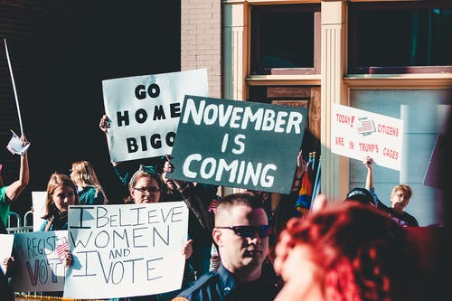
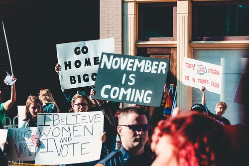

Burgerschap
Burgerschap is een erg breed vak. Maar wat houdt het nou eigenlijk in. Een aantal onderwerpen die behandeld worden zijn:
Een gezonde leefwijze
Dit is misschien niet het eerste waar je aan denkt bij een vak als dit. Maar een belangrijke rol van Burgerschap ik het bespreken van onderwerpen als roken, verslavingen en gezond leven.
De politiek
Als volwassen persoon is het belangrijk dat je weet waar je op stemt tijdens de verkiezingen. Als je geen idee hebt wat de verschillende politieke partijen aan standpunten hebben kun je geen weloverwogen besluit nemen. Dit zorgt er ook weer voor dat mensen niet gaan stemmen en zo geen invloed kunnen uitoefenen. Dit geldt vooral onder de jonge stemmers, en aangezien er veel meer wordt gestemd onder oudere mensen zijn het vaak de wat meer conservatieve partijen die voorop lopen. Ook wordt er gekeken naar andere landen en hoe het daar gaat. Bijvoorbeeld in Amerika tussen Trump en Biden en hoe de verkiezingen daar werken.
Bij burgerschapsvorming staan drie onderwerpen centraal:
- democratie – kennis over de democratische rechtstaat en politieke besluitvorming; democratisch handelen en de maatschappelijke basiswaarden
- participatie – kennis over de basiswaarden en mogelijkheden voor inspraak en vaardigheden en houdingen die nodig zijn om op school en in de samenleving actief mee te kunnen doen
- identiteit – verkennen van de eigen identiteit en die van anderen; voor welke (levensbeschouwelijke) waarden sta ik en hoe maak ik die waar?
Nederlands
Bij nederlands worden deze vier onderwerpen behandeld:
- Lezen
- Luisteren
- Schrijven
- Spreken
Lezen
Je kent het vast wel, het is de schrik van iedere scholier. Ik heb het hier natuurlijk over begrijpend lezen. Dit is toch wel het grootste onderdeel wat behandeld wordt op school. Toch zijn er maar weinig mensen die tegenwoordig vaak een boek lezen en neemt de leesvaardigheid onder middelbare scholieren juist af. Persoonlijk las ik vroeger heel veel, en vaak ook Engelse boeken. Tegenwoordig lees ik alleen nog maar dingen op het internet.
Schrijven
Hier wordt voornamelijk gekeken naar verschillende soorten artikelen en brieven, en wordt besproken welke schrijfwijze waar bij past. Zo moesten wij dit blok een Curriculum Vitae en een sollicitatiebrief schrijven.
 
